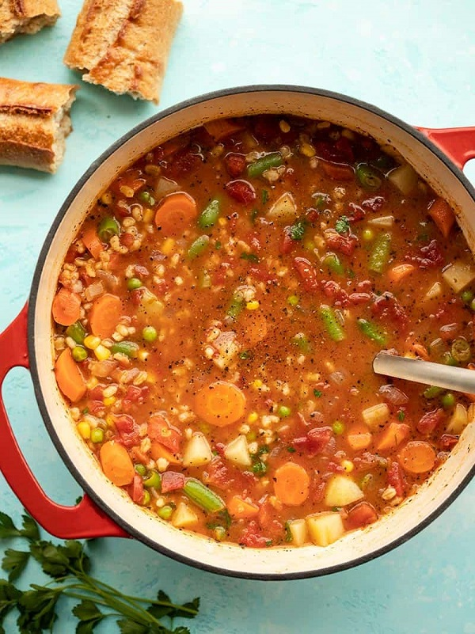

Barley Soup

Description
Loaded with colorful vegetables and filling pearled barley, this Vegetable Barley Soup is a healthy, freezer-friendly staple recipe for winter!
Ingredients
- 1 yellow onion
- 2 cloves garlic
- 2 Tbsp olive oil
- 1/2 lb. carrots (about 4)
- 1 28oz. can diced tomatoes
- 1 cup pearled barley
- 1/2 tsp dried basil
- 1/2 tsp dried oregano
- freshly cracked black pepper
- 6 cups vegetable broth
- 1 russet potato (about 3/4 lb.)
- 1 cup frozen green beans
- 1/2 cup frozen corn
- 1/2 cup frozen peas
- 1 Tbsp lemon juice
- 1 handful fresh parsley (optional garnish)
Steps
- Dice the onion and mince the garlic. Add the onion, garlic, and olive oil to a large soup pot and sauté over medium heat for about 5 minutes, or until the onion is soft and translucent.
- Meanwhile, peel and dice the carrots. Once the onions are soft, add the carrots to the soup pot, along with the canned diced tomatoes (with juices), barley, basil, oregano, some freshly cracked pepper, and vegetable broth.
- Stir the contents of the pot to combine, place a lid on top, turn the heat up to medium-high, and bring the broth up to a boil. Once boiling, turn the heat down to medium-low, and let the soup simmer, with the lid in place, stirring occasionally, for 30 minutes.
- While the soup simmers, peel and dice the potato into 1/2-inch cubes. After the soup has simmered and the barley is mostly tender, add the diced potatoes and continue to simmer for 10 minutes more, or just until the potatoes are tender.
- Once the potatoes are tender, add the frozen green beans, corn, and peas. Stir to combine, and heat through (about 5 minutes in the simmering soup).
- Finally, add the lemon juice to the soup and stir to combine. Taste the soup and adjust the salt or pepper to your liking. Serve hot, with fresh chopped parsley on top as a garnish, if desired.